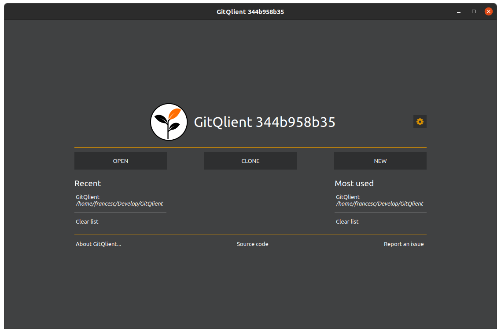

The different parts that form the UI will be hoevered when using the mouse.
This scren shows the main screen once a repository has been opened. The class in charge of wrapping all the widgets is GitQlientRepo.
Graph view (InitScreen) |